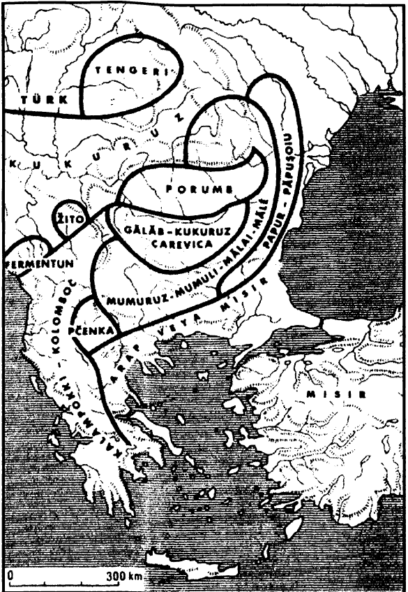

Tarımı yapılan bitkiler yolculuk yapmaya ve insanların hayatım altüst etmeye ara vermemektedirler. Fakat bunların hareketleri kendiliğindenmiş gibi olduğu için, yüzyıllara, bazen binyıllara yayılmaktadır. Ancak Amerika'nın keşfinden sonra bu hareketler çoğalmış ve hızlanmışlardır. Eski Dünya'nın bitkileri Yeni'sine ulaşmışlardır; Yeni Dünya'nınkiler ise Eski'sine: bir yanda pirinç, buğday, şeker kamışı, kahve...; öte yanda mısır, patates, fasulye, domates, manyok, tütün.
Bu davetsiz misafirler, her yerde yerli kültür ve besinlerin husumetine çarpmaktadırlar: patates Avrupa'da yapışkan ve hazmı güç bir besin olarak kabul edilmiştir; pirince sadık güneydoğu Çin'de mısıra bugün bile burun kıvrılmaktadır. Oysa bu gıda çekincelerine ve yeni deneylerin yavaşlığına rağmen, bütün bu bitkiler sonunda kârlı çıkmışlar ve kendilerini dayatmışlardır. Avrupa'da ve başka yerlerde, fakirlerin oluşturduğu müşteri kitlesi onlara kapıyı ilk açan olmuştur; zorunlu nedenlerden ötürü ortaya çıkan nüfus artışı bunun asıl nedenidir. Zaten dünyanın nüfusu arttıysa, artabildiyse, bunun kısmi nedenlerinden biri de, yeni kültürlerin izin verdiği, gıda üretimindeki artış değil midir?
İleriye sürülen deliller ne olurlarsa olsunlar, mısırın Amerika’daki hapishanesinden, taneleri ilk yolculuğundan dönüşünde, 1493'te getiren Colombus'tan önce kurtulmuş olması az olasıdır. Mısırın Afrika kökenli olması da az olasıdır. Bu köken tartışmaları konusunda, mısıra dünya ölçeğinde verilen adlara yaslanmak da hiç ikna edici değildir, çünkü bu ad, bölgelere ve dönemlere göre, mümkün ve düşünülebilecek bütün adlandırmaların rastlantısı içinde, gülünç biçimlerde giydirilmiştir. Lorraine'de Rodos buğdayı’dır; Pirenelerde İspanya buğdayı; Bayonne'da Hind buğdayı; Toskana'da Suriye doura’sı, İtalya'nın diğer yerlerinde çoğu zaman grano turco; Almanya ve Hollanda'da Türk buğdayı; Rusya'da feufeuru’dur ve bu da zaten Türkçedir; ama Türkiye'de ona Rum buğdayı da denilmektedir; Franche-Comte'de ise turky. Garonne vadisi ve Languedoc'ta, daha da beklenmedik bir şekilde ad değiştirmiştir. Gerçekten de, 1637'de Castelnaudary ve 1638'de Toulouse pazarlarında İspanya dansı adı altında ortaya çıkmıştır, bu bölgede çok yaygın olan darı, artık ticaret sicillerinde Fransa darısı adını almıştır; sonra iki tahıl, şişman darı ve ince darı adlarıyla işaret edilir olmuşlardır ve bu iş mısırın darı ekimini sahadan sildiği tarihe kadar sürmüş, ondan sonra da yalnızca “darı” adını almıştır. Bu ise bir yüzyıldan fazla bir süre, Devrim'e kadar sürmüştür; o tarihten sonra nihayet mais kelimesi ticaret sicillerine girmiştir.
Amerika'nın keşfinden sonra, mısırın hem Avrupa'daki hem de Avrupa dışındaki ilerlemesini kabaca izlemek mümkündür. Bu çok yavaş ilerlemede kitlesel başarılar ancak XVIII. yüzyılla birlikte kaydedilmektedir.
Fakat büyük botanikçilerin elkitapları bitkiyi 1536'dan itibaren tasvir etmeye başlamışlardır (Jean Ruel) ve Leonhart Fuschs'unki (1542) mısırın tam bir resmini vermekte ve onun tüm bahçelerde bulunduğunu eklemektedir,212 fakat bizi ilgilendiren, bostanları -deney alanları- ne zaman terk ettiği ve tarlalar ile pazarlardaki yerini ne zaman fethettiğidir. Köylülerin yeni bitkiye alışmaları, onu kullanmasını ve bundan da fazlası, yemesini öğrenmeleri gerekmiştir. Mısır bu fetih esnasında çoğu zaman, gene Amerika'dan gelmiş olan ve toprakların kendini toplamasına yarayan fasulyeye ortak olmuştur; fagioli ve grano turco İtalya'yı birlikte istila etmişlerdir. Olivier de Serres, 1590'a doğru Vivarais'inde onların birlikte gelişin fark etmektedir.213 Fakat bütün bunlar zaman, çok zaman alacaktır. Daha 1700'de bile bir ziraatçi, mısırın Fransa'da bu kadar az yetişmesinden şaşkınlık duymaktadır. Aynı şekilde, Balkanlarda da mısır, en azından on farklı ad altında yerleşmiştir, fakat mâliyeden ve ağalık ödentilerinden kurtulmak için bahçelere ve trafiği yoğun yollardan uzak topraklara demir atmıştır. Geniş mekânlara ancak XVIII. yüzyılda, yani Amerika'nın keşfinden iki yüzyıl sonra kavuşacaktır. Zaten mısırın Avrupa'da başarıya ulaşması da kabaca ancak XVIII. yüzyılda gerçekleşecektir.

BALKANLARDA MISIRA VERİLEN ADLAR
Sonuç olarak şaşırtıcı bir gecikme, çünkü istisnalar, aceleler ve göz kamaştırıcı sonuçlar meydana gelmiştir. 1500'dc bulunduğu Andalusya'dan, Katalonya'dan, 1520'de ulaştığı Portekiz'den, aynı dönemde vardığı Galiçya'dan, bir taraftan İtalya, öte taraftan da güneybatı Fransa'ya geçmiştir.
Venedik bölgesindeki başarısı göz kamaştırıcıdır. Sanıldığına göre, 1539'da buraya gelen mısır ekimi, Terra Ferma'da yüzyılın sonuyla bir sonraki yüzyılın başı arasındaki dönemde genelleşmiştir bile. XVI. yüzyılda büyük sermaye yatırımlarının yapıldığı ve koskoca tarlalarda yeni tahılların denendiği, Venediğe yakın dar Polesino bölgesinde çok daha erkenden gelmiştir: grano turco’nun 1554'ten itibaren yayılması normaldir.
Güneybatı Fransa'da, ilk ulaştığı yer Bearn olmuştur. 1523'ten itibaren Bayonne bölgesinde, 1563'e doğru Navarreux kırlarında mısır taze ot olarak görev yapmaktadır; halk beslenmesine katılabilmesi için biraz zamana ihtiyacı vardır. Toulouse bölgesinde teşvik görmesi, herhalde çivitotu tarımının başarısızlığa uğramasındandır.
Venedik bölgesinde ve yerleştiği tüm bölgelerde olduğu gibi, Garonne vadisinde de, ekmeği isteksizce terk ederek mısır galetasına geçenler fakir kentli ve köylüler olmuştur. 1698'de Bearn'a ilişkin olarak şunlar okunmaktadır: “darı (mısır diye okuyunuz) halkın beslendiği, Hindden gelme bir cins buğdaydır.” Lizbon'daki Rus konsolosuna göre, o “Portekiz'de alt tabakaların başlıca gıdasını meydana getirmektedir.” Burgonya'da “gaudes denilen fırında pişirilen mısır unu, köylülerin gıdasıdır ve Dijon'a satılmaktadır.” Fakat mısır hiçbir yerde, ona karşı, XX. yüzyılda Karadağ'da yolculuk yapan şu seyyahın “her yerde görülen... kabuğu güzel bir sarı renkte olup, göz okşayan, ama miğdeye tiksinti veren şu ağır somunlar”ın karşısındaki tepkisine sahip olan hali vakti yerindeki sınıfların sofralarına girememiştir.
Mısırın tartışmayı kesip atan bir gerekçesi vardır: verimliliği. Tehlikelerine rağmen (mısıra fazlasıyla çağrıda bulunan bir beslenme pellegra hastalığına yol açmaktadır), Venedik'te o zamana kadar sık çıkan hastalıklara son vermemiş midir? Fransa'nın güneyinin millasse’ı, İtalya'nın polenta’sı, Romanya'nın mamaliga’sı da, başka türlü tiksindirici olan gıdaların deneylerinden ötürü bildiklerini unutmamamız gereken kitlelerin beslenmesine, aynı şekilde katılmışlardır. Açlığın önünde hiçbir gıda tabusu tutunamaz. Bundan da öteye, mısır insanların olduğu kadar, hayvan gıdası da olarak, nadasa bırakılan alana da yerleşmiş, burada, tıpkı otçul bitkilerin aynı nadas alanda kazandıkları başarıya benzemeyen bir “devrim” gerçekleştirmiştir. Nihayet, cömert ürün veren bu tahılın payının artması, ticarileştirilebilir buğday miktarını artırmıştır. Köylü mısır yemekte, fiyatı aşağı yukarı onunkinin iki katı olan buğdayını satmaktadır. XVIII. yüzyılda Venedik'te buğday ihracının, 1745-1755'li yılların İngiltere'sine benzer bir şekilde, tahıl üretiminin % 15-20'sine ulaşması bir olgudur. Fransa bu dönemde ürettiği tahılların % 1-2 yaklaşığıyla, hemen tamamını tüketmektedir. Fakat Lauraguais bölgesinde de “XVII. yüzyılda ve özelikle XVIII. yüzyılda mısır köylü gıdasının büyük bölümünü sağlayarak, buğdayın büyük ticarete yönelik bir tarım olmasına olanak vermiştir.”
Kongo'da da aynı şekilde, XVI. yüzyılın başında Amerika'dan Portekizliler tarafından getirilen ve masa ma mpata, Portekiz başağı adını taşıyan mısır büyük bir sevinçle kabul edilmemiştir. 1597'de Pigafetta, mısırın diğer tahıllardan daha az muteber olduğunu ve insanları değil de, domuzları beslemek için kullanıldığını işaret etmektedir Bunlar ilk tepkilerdir. Mısır yavaş yavaş Kongo'nun kuzeyinde, Benin'de, Yoruba ülkesinde, yararlı bitkiler arasında birinciliğe tırmanmıştır. Ve bu tartışmasız zafer bugün efsaneler zincirine katılmış olarak görülmekte değil midir? Bu bir de üstüne üstlük, yemek yemenin yalnızca maddi hayatın bir gerçeği olmadığının kanıtıdır.
Avrupa'ya ulaşmak, Afrika'ya ulaşmak nisbeten kolaydı. Mısır başka bir kapsamı olan bir macerayı Hind'e, Birmanya'ya, Japonya'ya ve Çin'e girerek başarıyla sonuçlandırmıştır. Çin'e erkenden, XVI. yüzyılda hem kara yolundan ve Birmanya sınırından -ve Yunnan'a yerleşmiş- hem de deniz yolundan, limanlarının Filipinler ve Endonezya ile sürekli ilişkide bulunduğu Fon Kieu'dan gelmiştir. Zaten yer fıstığı da XVI. yüzyılın başında ve sonra da tatlı patates bu aynı limanlardan (Moluka adalarıyla ticaret yapan Portekizlilerin veya Çinlilerin aracılığıyla) gelmişlerdir. Ancak mısır ekimi 1762'ye kadar, yalnızca Yunnan'la, Seçuan ve Fukien'in birkaç ilçesiyle sınırlı olarak, önemsiz kalmıştır. Mısır fiili durumda ancak nüfusun hızlı arttığı XVII. yüzyılda kendini dayatacak, pirinçliklere ayrılmış olan ovaların dışında, tepeliklerin ve dağların tarıma açılmasını zorunlu hale getirecektir. Burada da Çin halkının bir bölümü, keyiften değil de, zorunluktan gözde besinlerinden vazgeçecektir. Bu tarihten sonra mısır kuzeye geniş ölçekte yerleşmiş, hatta buradan taşarak, Kore'ye varmıştır. Kuzeyin geleneksel ekinleri olan darı ve sorgho'ya eklenmiş ve bu yayılma Kuzey Çin'i nüfus açısından, kendinden çok kalabalık olan Güney Çin'le dengelemiştir. Japonya da mısırı kabul ederek, onunla birlikte, kısmen Çin menzili aracılığıyla kendine ulaşmış olan koskoca bir yeni bitki dizisine de kucak açacaktır.
Patates And Amerika'sında, M.Ö. ikinci binde, mısırın tırmanamadığı yüksekliklerde mevcuttur. Olağan olarak daha uzun süre muhafaza edilmek üzere kurutulan, kurtarıcı bir kaynaktır.
Eski Dünya'daki yayılması mısırınkine tamamen benzemeyecektir: onun gibi, hatta ondan yavaş olan bu yayılma evrensel olmamıştır; Çin, Japonya, İslam ülkeleri onu kabul etmemişlerdir. Başarısı Amerikalı -gerçekten de Yeni Dünya'nın her tarafına yayılmıştır- ve bundan da fazla Avrupalı olacaktır. Avrupa dört bir yandan onun tarafından kolonize edilmiştir; yeni ürün bu kıtada bir devrim boyutlarına ulaşmıştır. Hatta bir iktisatçı, Wilhelm Roscher (1817-1894), kuşkusuz biraz aceleyle, patatesin Avrupa'nın nüfus artışının nedeni olduğunu savunmuştur. En fazlasından nedenlerinden biri diyelim ve çeşitlendirelim: Avrupa'nın nüfus artışı, yeni ürünün etkilerini ortaya çıkartmasından önce başlamıştır. Polonya kralının danışmanlarından biri 1764'ıe şöyle demektedir: “hemen hemen hiç bilinmeyen patates üretimini (ülkemize) getirmek isterdim.” 1790 civarında Saint-Petersburg çevresinde onu yalnızca Alman göçmenler yetiştirmektedirler. Oysa nüfus Rusya'da, Polonya'da ve başka yerlerde de olduğu gibi, bu geç tarihlerden önce de artmaktadır.
Yeni ürünün yayılması çok yavaş olmuştur; bu genel kural değil midir? İspanyollar onu 1539'da Peru'da tanımışlar, hatta İspanyol tüccarlar Potosi madenindeki kızılderilileri patatesle iaşe etmişlerdir, ama yeni bitki İber yarımadasını, hemen sonuç vermeyen bir şekilde katetmiştir. Herhalde İspanya’dan daha dikkatli olan, çünkü daha kalabalık olan İtalya'da çok daha erkenden ilgi çekmiş, deneylere yol açmış ve ilk vaftiz adlarından birini bulmuştur: onlarcasının arasında tartuffoli, diğerleri de İspanya'da turma di tierra, papa, patata; Portekiz'de batata, bataleira, İtalya'da tartuffo, tartuffola, Fransa'da cartou/le, truffe, patate, pomme de terre, İngiltere'de potato of America, ABD'de Irish potato, Almanya'da kartoffel, Viyana çevresinde erdtapfel olmaktadır, Slavca, Macarca, Çince, Japoncadaki adlarını es geçiyorum. Olivier de Serres 1600'de onu işaret etmekte ve yetiştirilişini kesin bir biçimde tasvir etmektedir. Carolus Clusius 1601'de, kendi tanıklığına göre. Alman bahçelerinin çoğuna ulaşmış olan patatesin ilk botanik tasvirini vermektedir. Geleneğe göre patates İngiltere'ye biraz daha erken, tam da Yenilmez Armada'nın yenildiği yılda, 1588'de Walter Raleigh'nin sayesinde ulaşmıştır. Bu şiirsel olayın iki düşman donanmanın Manş ve Kuzey Denizi sularında çarpışmasından daha büyük sonuçları olduğuna bahse girelim.
Patates Avrupa'da oyunu, genel olarak ancak XVIII. yüzyılın sonunda, hatta XIX. yüzyılda kazanmıştır. Fakat tıpkı mısır gibi, şurada veya burada daha erken başarıya ulaşmıştır. Bu arada, özellikle gecikmiş olan Fransa'da bu erken durumlar yalnızca Dauphine için; patatesin tarlalara 1660'tan itibaren ulaştığı Alsace; sonra 1680'de yerleştiği halde, 1780'de hâlâ eleştirildiği ve reddedildiği ve 1787'de kırsal halkın “başlıca sağlıklı gıdası” haline geldiği Lorraine için geçerlidirler. Bundan daha erken bir tarihte patates İrlanda'dadır ve burada bir miktar sütlü maddeyle karıştırılarak, XVIII. yüzyılda köylünün hemen tek gıdası haline gelmiş ve bilinen başarı ve felâkete yol açmıştır. İngiltere'de de aynı sıralar yayılmıştır, ama burada uzun zaman iç tüketime yönelik olmaktan çok, bir ihraç ürünü olarak yetiştirilmiştir. Adam Smith, İrlanda'da besleyici değerini açıkça kanıtlamış olan bir madde karşısında İngilizlerin bu burun kıvırmalarını lânetlemektedir.
Yeni ürünün başarısı İsviçre, İsveç ve Almanya'da daha fazla olmuştur. Zaten Prusya'da Yedi Yıl Savaşı sırasında esir düşen Parmentier (1737-1813) patatesi “keşfetmiştir.” Her halükârda Hibe ülkelerinde 1781'de hiçbir uşak, hizmetçi yoktur ki tartoffein yemeyi kabul etsin. “Lieber gehn sieausser Dienst”, efendi değiştirmeyi tercih etmektedirler.
Bu ürünün fiili olarak yayıldığı ve yumrusunu ekmeğin rakibi olarak önerdiği her yerde direnç belirmektedir. Tüketiminin cüzzamı yaydığı söylenecektir. Bağırsaklarda gaz yaptığı söylenecektir ve 1765'te Encyclopedic bunu kabul ettikten başka, şunu da ekleyecektir: “fakat köylülerin ve işçilerin güçlü organları için rüzgârlar (gazlar) nedir ki!” Demek ki, patatesin fethinin hızlı ve yaygın olduğu ülkelerde, bu fethin az veya çok dramatik, zorluklara rağmen yerleşmiş olmasında şaşılacak bir şey yoktur. İrlanda'da olduğu gibi, açlık tehdidi bunu sağlamıştır, çünkü aynı miktarda toprak parçası bir kişiye yetecek kadar buğday verirken, sağladığı patates iki kişiyi rahat rahat doyurabilmektedir. Bundan da fazlası, tahıl tarlalarını mahveden savaşlar patatesin bu yerleşimini sağlamışlardır. Alsace'a ilişkin bir belge, çiftçiler patatesi şımartmaktadırlar, “çünkü hiçbir zaman savaşın yol açtığı zararlara maruz kalmamaktadır” diye açıklamaktadır; bir ordu yazın bir tarlada kamp kurabilir ve sonbahar hasadını tahrip etmez. Fiili durumda her savaş patates tarımını teşvik etmişe benzemektedir. Alsace'da XVII. yüzyılın ikinci yarısı boyunca, Flandre'da Augsburg Ligası savaşı (1688-1697), sonra da İspanya Veraset savaşı sırasında ve nihayet 1740 tahıl kriziyle çakışan Avusturya veraset savaşı sırasında; Almanya'da Yedi Yıl savaşı sırasında ve özellikle de, “patates savaşı” adı verilen Bavyera Veraset savaşı (1778-1779) sırasında. Sonuncu avantaj: yeni ürünler bazı bölgelerde kilise ondabirlerinden kurtulmaktaydılar ve patatesin güney Alçak Ülkeler'de 1680'den ve Birleşik Eyaletler'de de 1730'lardan itibaren yayılışını çok kesin bir şekilde izlememize olanak verecek şekilde, mülk sahipleri bu vergiden kaçmak üzere aynı yöntemleri uygulamışlardır.
Gene bu Flaman bölgelerine ait olmak üzere, C. Vandenbroeke, tahıl tüketiminde dolaylı olarak yol açtığı azalmadan hareketle, patates tüketiminin devrimci yükselişini hesaplamıştır, tahıl tüketimi 1683'te, günde adam başına 0,816 kg.'dan, 10'da 0,758'e, 1740'ta 0,680'e, 1781'de, 0,476'ya, 1791'de 0,475'e geçmiştir. Tüketimdeki bu düşüş, patatesin Flandre tahıl tüketiminin % 40'ını ikâme ettiğini işaret etmektedir. Bütünü itibariyle patatese düşman olan Fransa'da, XV1I1. yüzyılda buğday tayınının düşme yerine artması, bu olguyla kesişmektedir. Fransa'da patates devrimi, Avrupa'nın birçok kesiminde de olduğu gibi, ancak XIX. yüzyılda başlamıştır.
Gerçeği söylemek gerekirse bu, birçok sebzeyi ve sebzegili bahçelerden tarlalara yollayan ve İngiltere'de erken olmasına rağmen, Adam Smith'in gözünden kaçmayan, daha geniş bir devrimin içinde yer almaktadır: “eskiden yalnızca çapayla yetiştirilen patatesler..., şalgamlar, havuçlar, lahanalar, sebzeler şimdi sabanla yetiştirilmektedir. Artık tüm bahçe ürünleri de ucuzladı” diye yazmaktadır 1776'da. 30 yıl kadar sonra, Londra'da bulunan bir Fransız, tarla sebzelerinin bolluğunu anlatmaktadır, “bunlar size, tıpkı ata saman veriliyormuş gibi, doğanın güzel sadeliği içinde sunulmaktadır. ”
Avrupa'nın XVI11. yüzyılda gerçek bir gıda devrimini başardığı (bunu tamamlaması için iki yüzyıl uğraşması gerekmiş olsa bile) konusunda ikna olmak için, iki zıt gıdanın karşılaştıkları her seferinde, hangi canlı çatışmaların meydana gelebileceğini görmek yeterlidir; kısacası bir kişi evinin, adetlerinin, gündelik gıdalarının dışında olduğunda ve başkasına teslim edildiğinde. Avrupalılar bize bu konuda monoton, inatçı, ama aşılması güç bu gıda sorunları hakkında her zaman ufuk açıcı örneklerin en iyilerini sağlamaktadırlar. Onların merakına veya sömürülerine açılan ülkelerde, adetlerinden asla vazgeçmedikleri düşünülmektedir: şarap, alkol, et, Avrupa'dan gelen ve kurtlu olanlarının bile Hind'lerde altın pahasına satıldığı salam. Ekmek konusunda, her şey ona kolayca ulaşılabilecek şekilde düzenlenmiştir. Sadakat buna mecbur bırakmaktadır! Gemelli Careri Çin'de buğday alıyor, bundan kendine peksimet ve “bu ülkede kullanılan etüvde kurutulmuş ve hiçbir baharat katılmamış pirinç miğdeme hiç uygun düşmediğinden, peksimet olmadığında" pasta yaptırtmaktadır. Buğdayın yetişmediği Panama kıstağına, un Avrupa'dan gelmekte olduğundan “burada ucuz olmamaktadır", demek ki ekmek bir lükstür. “Ekmek ancak kentlerde oturan Avrupalılarda ve onu ancak sütlü kakao içerken veya karamelalı reçel yerken kullanan zengin melezlerde vardır." Diğer tüm yemeklerde bir cins polenta olan mısır çöreği ve hatta “balla tatlandırılmış" manyok galetası yemektedirler.
Yorulmaz seyyah Gemelli Careri Şubat 1697'de Filipinlerden gelip, Acapulco'ya vardığında, tabii ki buğday ekmeği bulamamıştır. Daha sonra Mexico yolu üzerinde, Massatlan trapiche’sinde “iyi ekmek... bulduk ki, bu durum bu dağlarda az bir şey değildir, çünkü buranın tüm halkı mısır çöreği yemektedir” diyerek anlattığı hoş sürprizle karşılaşacaktır. Bu, Yeni İspanya'da; sulanan veya sulanmayan (riego veya secano) topraklarda yapılan ve kentlere satışa yönelik önemli bir buğday tarımının var olduğunu hatırlatmanın fırsatıdır. İşte biz tarihçiler tatmin olduk. 12 Mart 1697 Sah günü, Careri Mexico'da bir halk kıpırdanmasına tanık olmuştur: “bugün bir cins ayaklanma oldu, halk kral naibinden ekmek istedi..." “1692'de Galoe kontunun zamanında olduğu gibi." Halkın sarayı yakmasını önlemek için hemen önlem alınmıştır. Acaba bu “halk" bizim sandığımız gibi, yalnızca beyazlardan mı oluşmuştu? Biraz çabuk sonuca varmak üzere, böyle olduğunu kabul edelim: beyaz ekmek, beyaz adam. Bu Amerika'da anlaşılmaktadır. Eğer bunun tersine, kentin melezleri, kızılderilileri ve zenci köleleri söz konusuysa, bu durumda her zaman ikircikli olan “ekmek” adının ancak mısır olduğuna bahse girelim.